遊びで植物を育てよう
2025/07/19
食べたスモモのタネをポットにまきました。

採り播きです。忘れないように名札も付けてます。
前回の実生は発芽後に枯れたので、次はちゃんと育てたいです。
【すももTOP】
【果物TOP】
【園芸TOP】
2024/12/31
スモモの剪定をしましたが早めに終わりました。
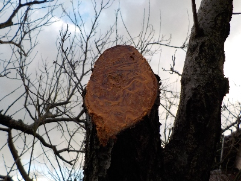
ノコギリで太い枝を切りました。もっと沢山切って小さくしたかったですが、暗くなってきたので止めました。
続きは来年だな。
【すももTOP】
【果物TOP】
【園芸TOP】
2024/04/28
スモモに大量のウスバツバメガの幼虫がいます。
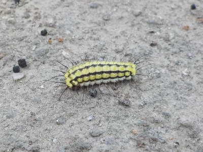
黒いトゲトゲがあるので毒がある毛虫だと思っていましたが、毒はないそうです。
今までウスバツバメガの幼虫を見ると、危険なので近づかないようにしていましたが、そんな必要はなかったです。
【すももTOP】
【果物TOP】
【園芸TOP】
2024/03/30
スモモの花が咲きました。
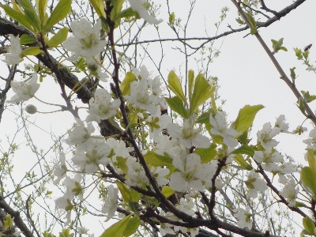
今年はいつもの年より花が多い気がする。
花が咲いても実ができないと意味がない気もしますが、きれいなのでいいかな。
【すももTOP】
【果物TOP】
【園芸TOP】
2023/03/25
スモモが開花中です。
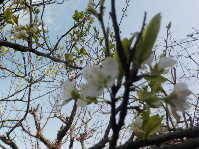
沢山実になりますように。
【すももTOP】
【果物TOP】
【園芸TOP】
2022/12/31
2022年最後の園芸はスモモの剪定でした。
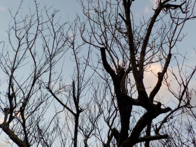
1年終わりました。
好きでアレコレやっていますが、量を減らすか効率を良くした方がいいかなと思っています。
無理すると体のどこかが不調になりやすくなりました。のんびりやりたいです。
【すももTOP】
【果物TOP】
【園芸TOP】
2022/09/04
スモモの葉っぱが全部ケムシに食べられました。
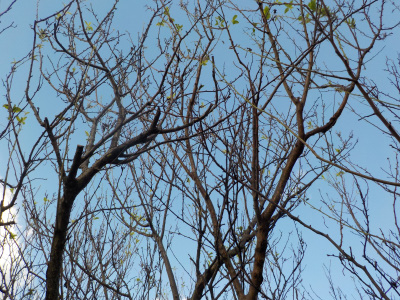
ケムシに葉っぱを食べられてしまいました。ケムシの食べ物はなくなってしまったので、もうケムシはいません。
どこに行ったかわかりませんが、いなくなったのはうれしいです。
【すももTOP】 【果物TOP】 【園芸TOP】
2022/07/07
スモモを収獲したけど固かったです。
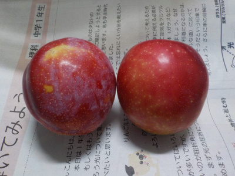
赤くなったので収獲したんですが、まだ固かったです。
もうちょっと置いて、柔らかくなってから食べようと思います。
【すももTOP】 【果物TOP】 【園芸TOP】
2022/06/29
スモモにコガネムシがいました。
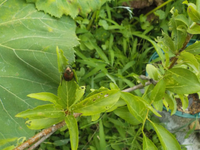
小さい鉢植えのスモモによく気がつきましたね。
また虫対策のスプレーをしようと思います。
【すももTOP】 【果物TOP】 【園芸TOP】
2022/05/05
スモモの下が危険地帯になりました。
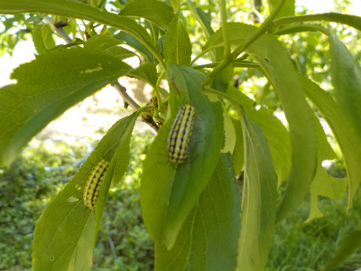
スモモに毛虫発生中です。
隣にアンズや桃がありますが、そっちにはいなくてスモモだけいます。
よほど葉っぱが美味しいんでしょう。
【すももTOP】 【果物TOP】 【園芸TOP】
2021/08/13
スモモの鉢にリュウノヒゲを植えました。
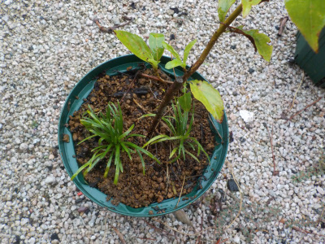
リュウノヒゲ増殖中で、色んな場所に植えて遊んでいます。
何もないとか雑草が生えるよりも、こっちの方がいいかなと思いました。
【すももTOP】 【果物TOP】 【園芸TOP】
2021/05/29
強風と豪雨でスモモの実が落ちました。
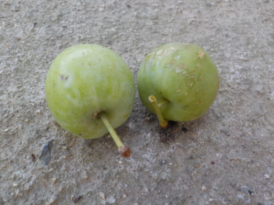
昨晩、強風と豪雨があったのでスモモの実が落ちました。
自然のことなので仕方ないです。
【すももTOP】 【果物TOP】 【園芸TOP】
2021/05/15
スモモの挿木が大きくなったので鉢のサイズを大きくしました。
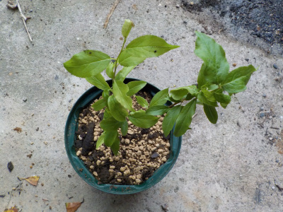
挿木に3本成功してて、2本は先に鉢を大きくしていましたが、残り1本も大きくなったので植替えしました。
成長が速いので、剪定して高さを抑えた方がいいかもしれません。
【すももTOP】 【果物TOP】 【園芸TOP】
2021/04/04
スモモの実生を鉢上げしました。
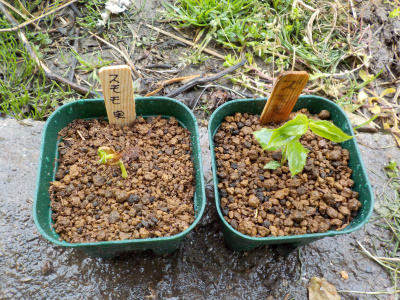
スモモは挿木が順調に育っているので、この実生は梅が桃の台木にしたいと思っています。
1年で台木出来るサイズに育つといいんですが、どうなるでしょうね。
【すももTOP】 【果物TOP】 【園芸TOP】
2021/03/21
7月にまいたスモモの種から芽が出ました。
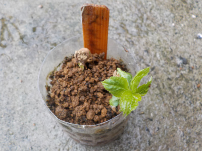
存在を忘れたころに芽が出ました。
春になって芽が出るって自然な感じですね。
冷蔵庫で冷やして発芽を早めるとかありますが、そんなことしないで採取したらすぐ種蒔きして、春に発芽するのを待つのが普通で一番いいかなと思いました。

今日はスモモの花が沢山咲いていましたが、天候が悪く観賞はしませんでした。
【すももTOP】 【果物TOP】 【園芸TOP】
2020/10/04
スモモの挿し木は成長が速いです。
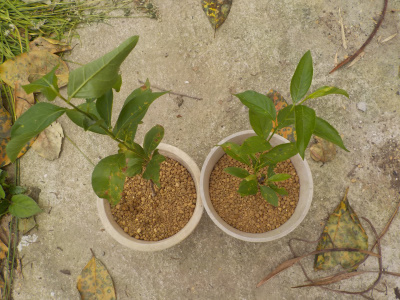
今年挿し木したスモモですが、成長がとてもいいです。
今まで挿し木した中で一番早く成長しています。
【すももTOP】 【果物TOP】 【園芸TOP】
2020/08/01
スモモの挿し木は成功しました。
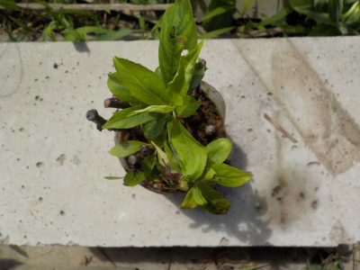
3本根っこがありました。
小さい鉢に移動して育てることにします。
今年は桃や梅を挿し木しましたが、成功するしないは害虫が発生するしないで決まるんじゃないかと思いました。
【すももTOP】 【果物TOP】 【園芸TOP】
2020/07/18
スモモの種をまきました。
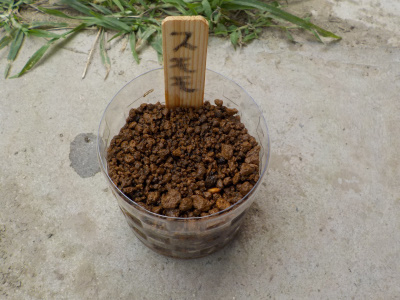
収獲して食べたスモモの種をまきました。
種は6個用意していたんですが、殻を割ってみたら種が育っていないものが多かったです。
普通サイズと小さいサイズの種１個ずつしか取れませんでした。小さいのは育たないんだろうな。
こんなことならもっと沢山種をとっておけばよかった。
【すももTOP】 【果物TOP】 【園芸TOP】
2020/06/07
スモモの挿し木に葉っぱがあります。

数本に葉っぱが出ています。
なんか成功していそうな感じです。
【すももTOP】 【果物TOP】 【園芸TOP】
2020/02/23
スモモの挿し木をしました。
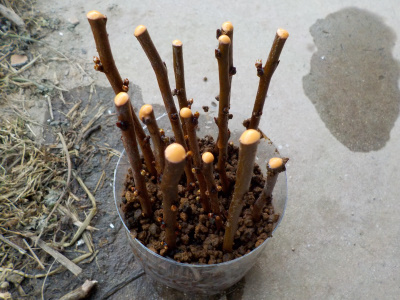
剪定した枝を使って挿し木をしました。
結果は何か月後にわかるんでしょうね？
【すももTOP】 【果物TOP】 【園芸TOP】
2019/09/23
スモモの挿し木はまた失敗です。
今まで何度も挿し木していますが、今回も失敗しました。
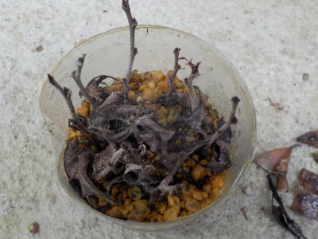
でも諦めません。
梅が成功するんだからきっとスモモも成功するはずです。
春に再チャレンジします。
【すももTOP】 【果物TOP】 【園芸TOP】
2019/07/14
スモモを収穫しました。
高枝切りハサミでスモモを収穫しました。
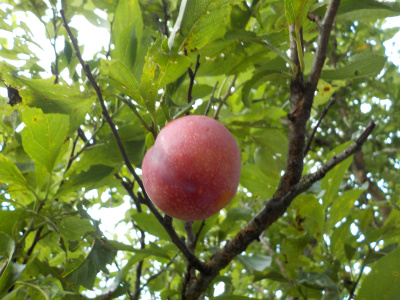
でもポロポロ落っことしました。
よく熟れたスモモは振動でも落ちるので採るのが難しいです。
落とした分は痛みやすいのですぐ食べました。
【すももTOP】 【果物TOP】 【園芸TOP】
2019/06/23
ペットボトルでスモモの挿し木に挑戦。
基本挿し木するものではありませんが試しにやってみました。
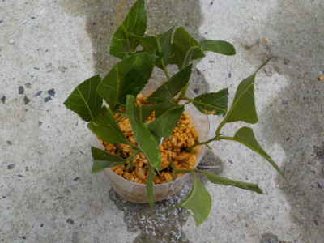
どうなるでしょうね。
【すももTOP】 【果物TOP】 【園芸TOP】
2018/06/10
すももの挿し木に挑戦
挿し木できるといいですね。
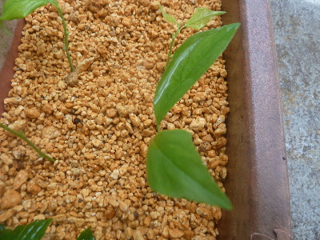
超ラッキーで根が出ないかな。
【すももTOP】 【果物TOP】 【園芸TOP】
2017/07/02
スモモを収穫しました。
ちょっと青いですが収獲しました。
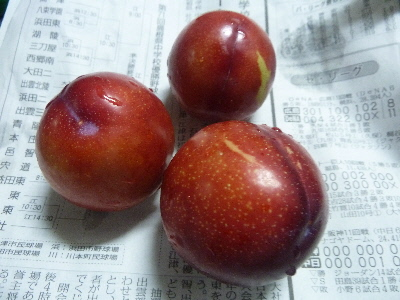
熟れたら食べます。
虫に食べられるとか、自然に落ちるのを思うとこれくらいが丁度いいかな。
【すももTOP】 【果物TOP】 【園芸TOP】
2016/07/03
スモモが熟れました。
2015/07/11
すももが収穫時期になりました。
2013/09/28
すももに蛾が卵を！
2013/04/28
すももに虫発生。
2013/03/23
すももの花が咲き出しました。
2012/09/08
スモモまた失敗。
2012/07/28
スモモは新芽が出て来ました。
2012/07/08
スモモの挿し木再挑戦。
2012/06/30
すももは1本しか残っていません。
2012/03/18
すももの木を剪定して挿し木しました。
【すももTOP】
【果物TOP】
【園芸TOP】
畑仕事じゃないよ。
【おいしいものを食べよう。】【たくさん寝よう。】
【ソロ活をしよう!】【季節感のあることをしよう。】【動画視聴はほどほどに。】【当サイトの全てのコンテンツは無断転載禁止です。】